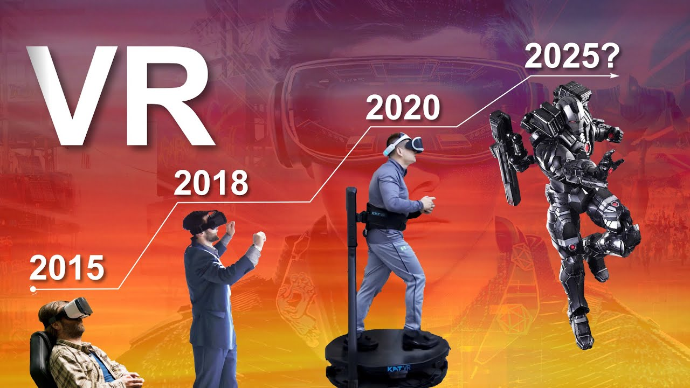

Prividan okoliš
Virtualni svijet ili virtualna stvarnost (engl. Virtual Reality) oblik je računalne simulacije u kojoj se sudionik osjeća kao da je u umjetnom okruženju. Sudionik može gledati kroz dva malena monitora (po jedan za svako oko). Senzori detektiraju kretanje glave ili položaj tijela, što uzrokuje promjenu virtualnog promatranja položaja. Sudionik može unositi podatke rukavicama (datagloves), koje su opremljene senzorima. Oni omogućuju korisniku podizanje ili pomicanje virtualnih objekata u simuliranoj okolini. Tehnologija je još u razvoju, ali se očekuje da će imati široku primjenu, na područjima kao što su: telekirurški zahvati, vojne vježbe, arhitektura u svrhu zabave ili psihoterapije. Korisnici virtualne stvarnosti vide virtualni svijet i dijelove svojeg tijela (ruke, tijelo ...) kao dio virtualnog svijeta pomoću elektroničke opreme (rukavice, kaciga, odjeća, i drugog). Tržište VR/AR-a već je postalo tržište od milijardu dolara, a predviđeno je da će u roku od nekoliko godina nastaviti rasti i do preko 120 milijardi dolara.
Science Time: "The Evolution of Virtual Reality by 2025" - klikni na sliku!
